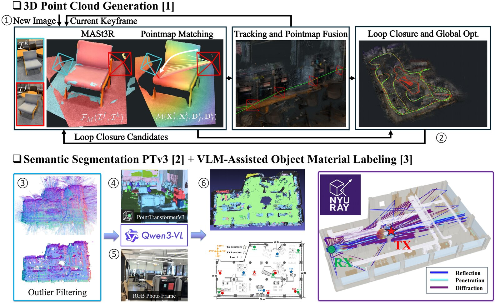
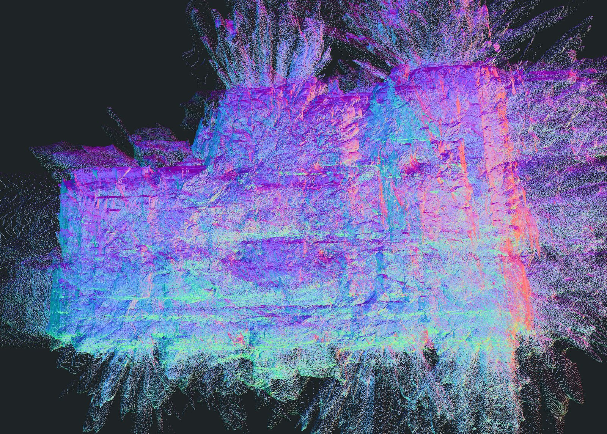
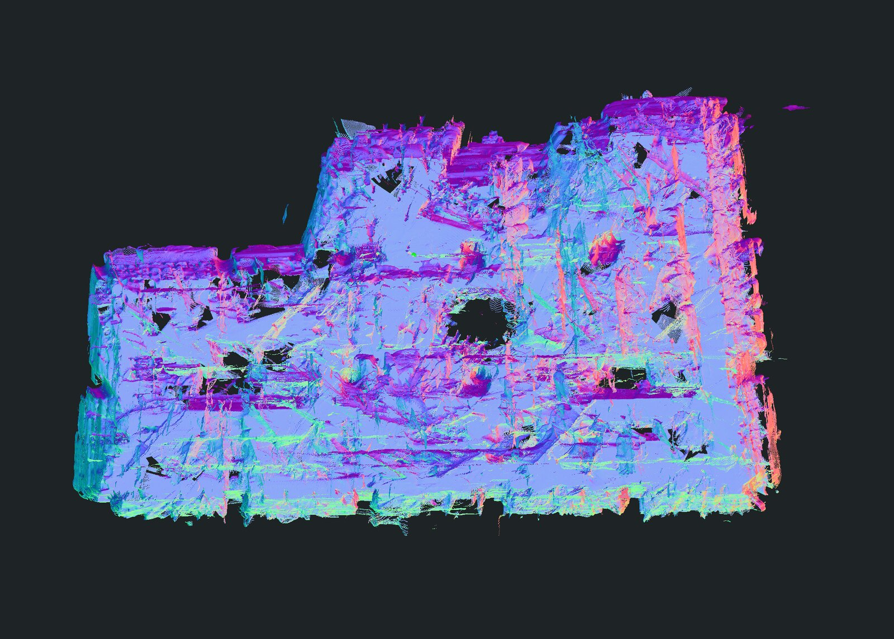
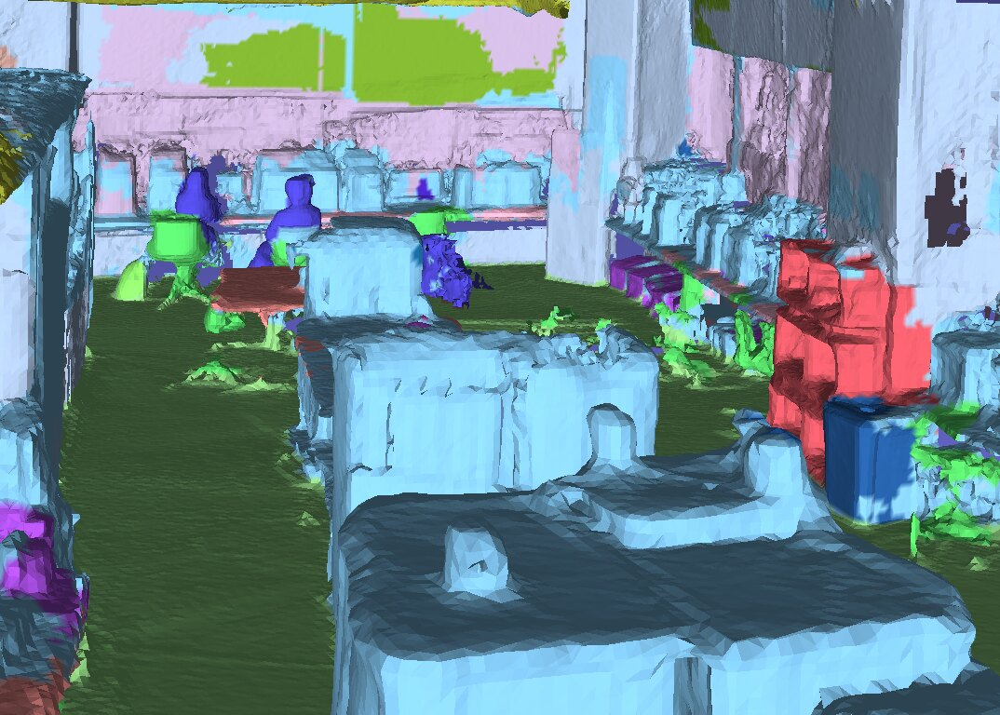
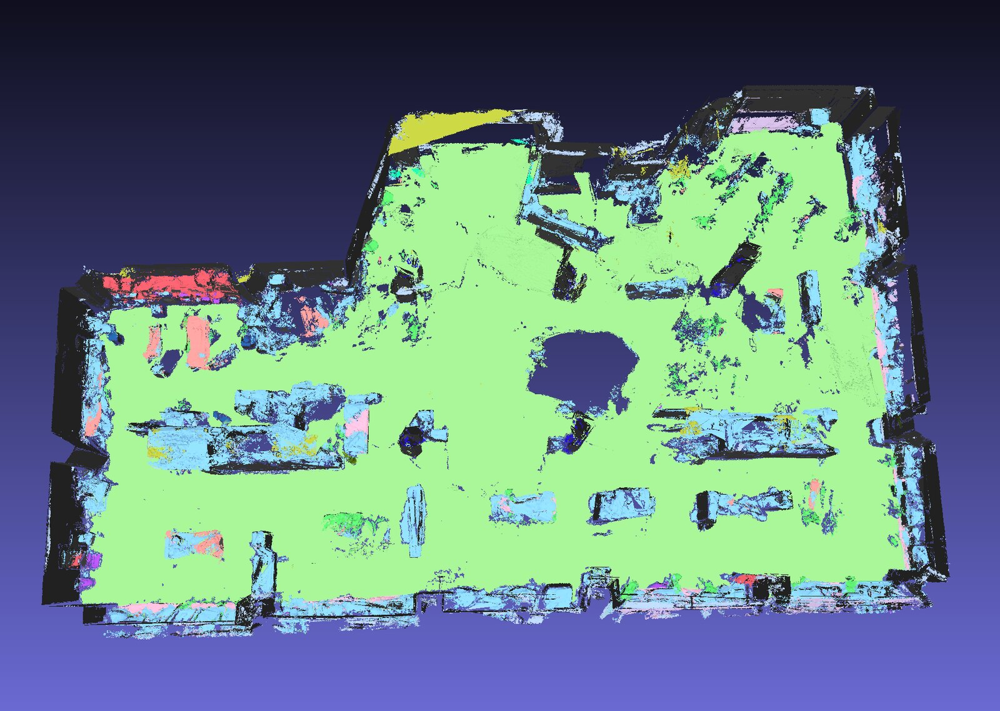

HoRAMA: Material-Aware 3D Reconstruction for Wireless Ray Tracing
- Automated framework that turns RGB video into ray-tracing-ready 3D models with electromagnetic material labels, cutting reconstruction time from months to hours.
- MASt3R-SLAM point clouds, PTv3 semantic segmentation, and Qwen3-VL material labeling.
- Validated at 6.75 and 16.95 GHz over 12 TX-RX links in a 700 m² factory with NYURay; RMSE comparable to a hand-built model.




